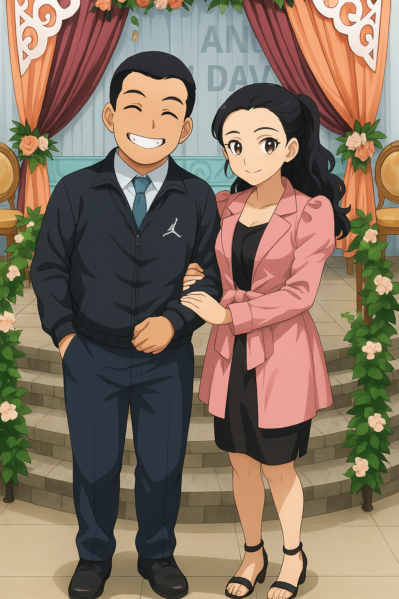
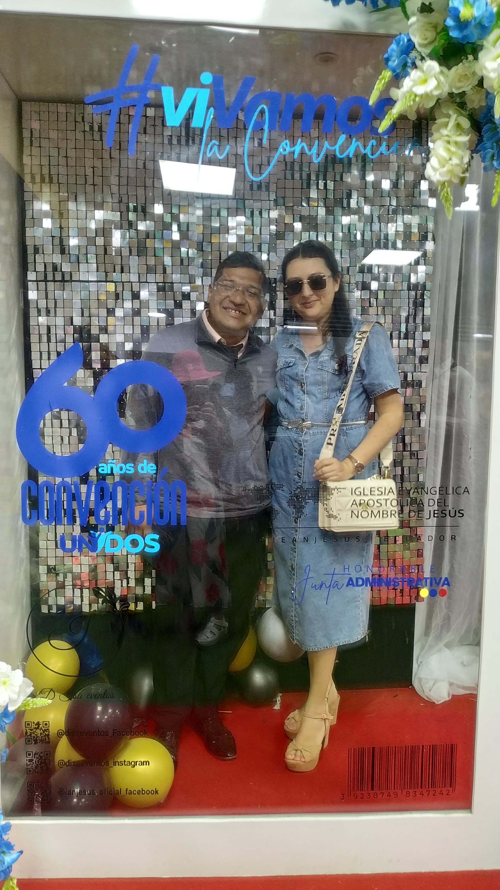

¡Feliz Cumpleaños, Janine!
Quiero en este dia tan especial para ti regalarte esta pagina que se podra borrar pero quedara en nuestros corazones especialmente el tuyo. ¡DISFRUTALO CON MUCHO!

Un Mensaje Especial 💖
Saber que tengo una linda y hermosa amistad contigo me llena de mucha alegría 🤗🥰💖 no sabía que se podría querer tanto a alguien 💖🥰 gracias le doy a Dios siempre ♾️ porque el fue quien nos hizo cruzar nuestros caminos para encontrarnos 💞😊 quizás nunca eh sido el mejor amigo que puedas tener 🤗 Pero con todo mi corazón te digo que Te quiero muchísimo 🫂💖 no olvido la primera vez que nos hablamos tanto como en persona y en Messenger 🤭💖🫂 todas las cosas que te día de mi adolescencia 🤭💖🫂 sentí confianza desde la primera vez que te Vi 🤗💖 me brindaste tu amistad y tú compañía y todavía la atesoro 💖🤗🫂 espero que este pequeño gesto de mi parte pueda llenar un poco más de alegría en este día tan especial que es tu cumpleaños 🎂🥳 quizás sea desde la distancia que te célebre o talvez esté allá 😊💖🫂🤗 solo Dios sabe y conoce las cosas 🥰💞💖🫂 disfrutalo mucho 🥳🥳 y que viva la cumpleañeraaaaaaaa 🥳🥳🥳🥳🥳
Recuerdo que valen oro 💖

El tiempo avanza cada día más y más 💖☺️ y en el trascurso de la vida nos encontramos a personas maravillosas, especiales, únicas ☺️💖 que nos encontramos en un lazo de tiempo 💖☺️ que Dios nos regala para conocernos 💖☺️ sin esperar que serias alguien muy importante para mí 💖☺️ que te iba a querer con todo mi corazón 💖☺️ y que un día se fue, Pero aún así te siento muy cerca 💖☺️ hemos celebrando nuestros cumpleaños juntos 💖☺️ nuestro mes 🤗💖 dónde nos deseamos lo mejor 💖☺️🤗 y lo mejor a Sido tu compañía en la vida 💖☺️ gracias le doy a Dios 💖 porque él te puso en mi camino para conocerte 🤗 y establecer una linda amistad 💖🫂 para ser una ayuda en un momento difícil 🫂💖🤗 todavía me acuerdo nuestras conversaciones por Messenger 🤭🫂 en la que te contaba lo que me pasaba y todo lo demás 🤭💖🫂 esperaba siempre poder saludarte cuando te veía en la iglesia 🤗💖🫂 esperaba pasar un momento contigo lleno de risa 🥰💖🫂 otro año más que Dios te ha dado y te celebro desde la distancia 🥰💖🫂🤗

Quizás no sea de muchas palabras 😉💖🫂 Pero ya sabes cómo soy 🤭💖🫂 me alegro tanto de haber compartido contigo muchos momentos únicos 🤗💖🫂 cómo cuando te dije que me quería inscribir al curso de proyección Pero no tenía una laptop para practicar 💖🫂🤗☺️ me dijistes que eso no era impedimento que estaba la laptop de la Iglesia 💖🫂🤗 recuerdo esos momentos cuando proyectaba y tú me motivas a seguir adelante 🫂💖 quizás no lo sabías 💖🫂 Pero había momentos en la que no la pasaba bien 🫂💖🤗 Pero hay estabas tu para motivar me 🤗💖🫂 tuvieron mucha paciencia conmigo para aprender y entender mis chistes agrios 🤭😅🫂💖 Pero te agradezco a ti y a Leandro por la paciencia y por enseñarme lo bonito que es comunicaciones 💖🫂🤗 recuerdo el día de graduación cuando me tomé una foto contigo ☺️🫂💖🤗 yo mucho antes ya te consideraba como mi mejor amiga 💖🫂🤗

Y tuve la mayor bendición y hermoso regalo de parte de Dios 🥹🫂💖🤗 que fue ser nombrado como secretario del comité de comunicaciones 💖🫂🤗 dónde compartí contigo 🤗🫂💖🤗 me llene de alegría y de amor a esa área 🤗💖🫂 que estaba muy emocionado por estar hay 🤗🫂💖 y que lindo fue compartirlo contigo 🤗💖🫂🥰 me acuerdo de algunos momentos juntos 🤗🫂💖 que pasamos en el comité el primer año 💖🤗🫂🥰 dónde los momentos más inolvidables fueron cuando estábamos en la presencia de Dios 🫂🥹🫂💖💖 muchas gracias nuevamente ☺️ por la paciencia que tenías hacia mi, en cuanto a llevar una secretaría 💖🫂🤗 aprendí mucho 💖🤗🥰 una nueva etapa de mi vida 💖🤗🫂 y hay seguías estando tú conmigo 💖🫂🤗🥰
 
También agradezco mucho por estos 10años de amistad junto a ti 🤗🥳💖🫂 le agradezco aun mas a Dios de todavía contar contigo 🤗🥳💖🫂 se que no soy muy bueno con los diseños y los vídeos 🤭🫂💖 Pero lo que cuenta es la intención 🤗🥳💖🫂 Dios te bendiga siempre Janny 🥰💞🫂💖 gracias por estos 10años más 💖🫂💞🤗 y que sean Miles más que Dios nos regale 🫂💖🤗💞🥰 para poder estar en tus metas y logros 💖🤗🤗💞💖🥰💞🫂🤗 y así mismo que tú estés en los míos 🥳🤗💖💞🤗🥰🤗🫂💖 Tamd 🫂 feliz 10años de amistad Janine Sánchez 🤗💖🫂🤗💞🤗💞💖🥰🫂💞💞🤗🫂💖💞🤗💞🤗🥰💖💞💖💞🤗
Ahora celebro tu día desde la distancia 🥹💖😘🫂 esperando el día de mañana poder verte y darte el abrazo que tanto deseamos 🥹💖😘🫂💖🥹 que nuestro Noviembre termine de la mejor manera 🥹💖😘🫂 que es vernos y darnos el abrazo que llegará al corazón y al alma 🥹💖😘🫂🥹 espero que te siga gustando la pequeña sorpresa para ti 💖🥹😘💖🫂💖😘💖🥰 con mucho cariño 💖 después de 10años de amistad 🥰💖😘🫂 es una bendición que estés en mis logros, avances, y etapas que he pasado 💖😘😘💖🥰🫂🫂😘🫂 así mismo quisiera estar yo contigo 😘😘💖🫂😘🤗💖🫂😘😘🫂🫂😘💖💗😘🫂😘😘💖😘😘🫂😘💖😘🫂💖💖🫂😘🫂😘💖 porque lo más bonito es estar rodeado de las personas que amamos 🫂💖🫂💖🫂💖🫂💖🫂💖🫂💖🫂🫂💖🫂💖🫂💖🫂🫂🫂💖🫂🫂🫂💖🫂💖🫂💖🫂💖🫂💖 Tamd💖🫂😘